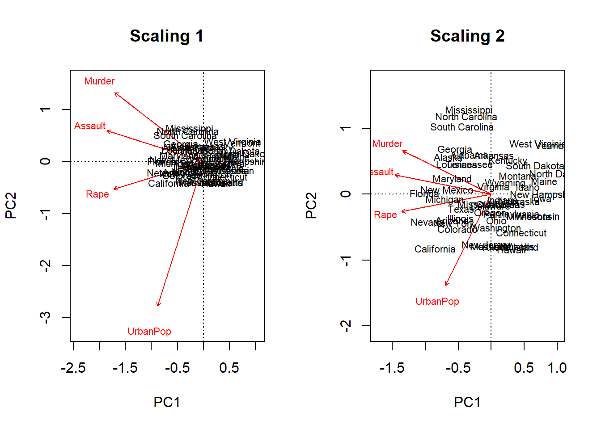
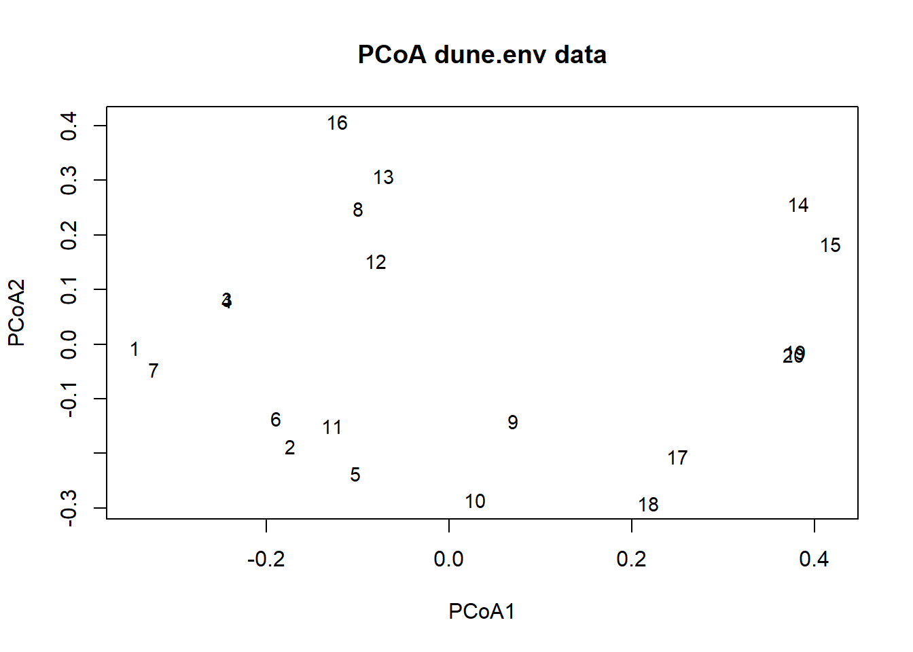
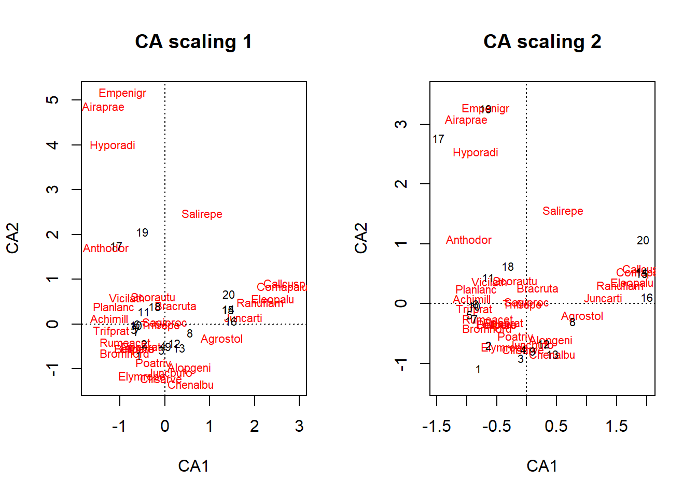
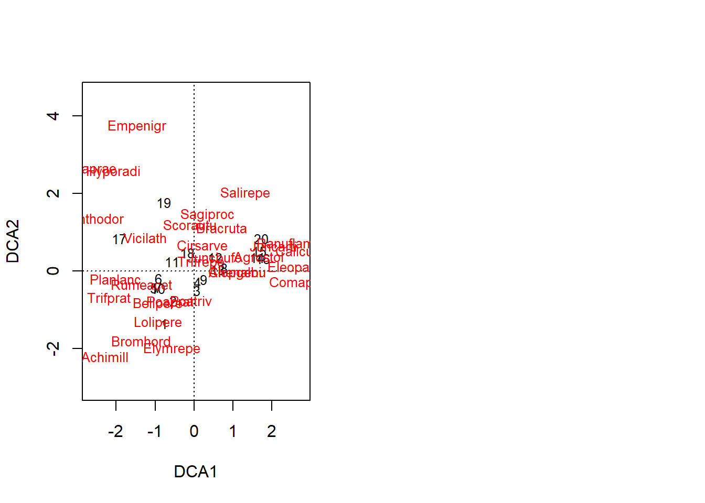
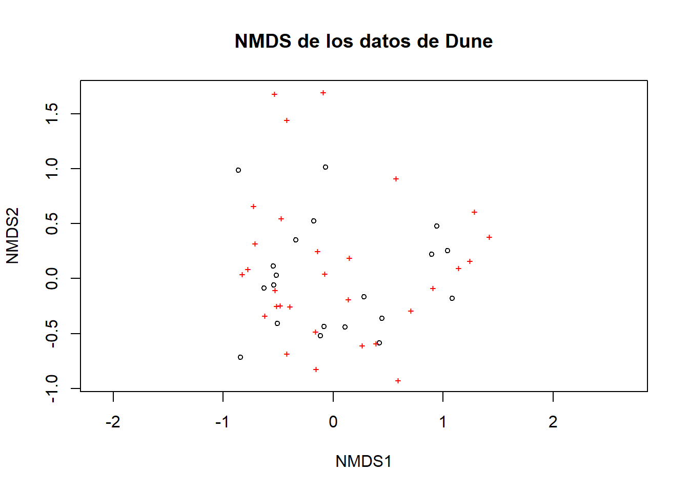
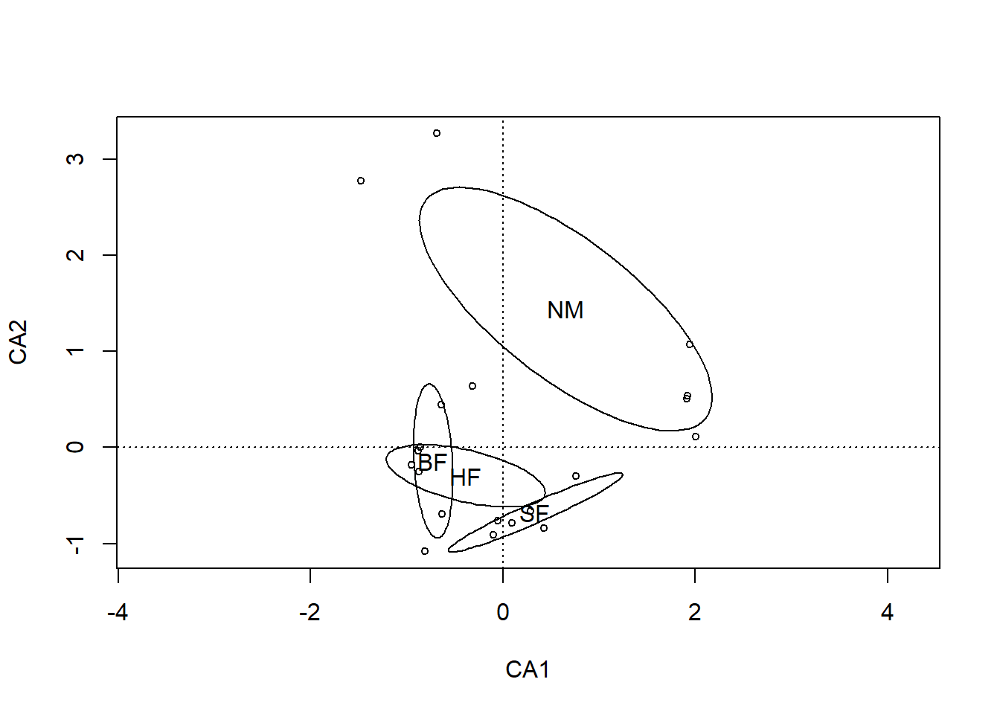

Capítulo 2 Ordenaciones
En ecología es bastante normal que dispongamos de datos que están conformados por un conjunto de sitios o localidades, para los cuales tenemos una serie de variables. Estas variables puede ser cada especie o cada condición que levantemos en el sitio, de esta forma, un sitio va a tener tantas variables como especies o factores ambientales se registren.
En el capítulo de similitud ordenamos las parcelas en función de la cantidad de individuos de dos especies, de esta forma la distancia a la que se encontraba cada comunidad nos daba información sobre cuanto se parecían. Aunque esta es una forma fácil de ordenar nuestras comunidades, esta forma de graficar es solo posible con dos o máximo tres especies, pero pocas comunidades tienen únicamente tres especies, cuando tenemos más de tres especies es necesario buscar otras formas de ordenación que nos permitan rescatar el gradiente ambiental.
De esta forma, el objetivo de los métodos de ordenación es representar los datos a lo largo de un número reducido de ejes ortogonales, construidos de tal manera que representan, en orden, las principales tendencias de los datos (Borcard, Gillet, and Legendre 2011).
Las ordenaciones pueden ser indirectas y directas (constreñidas). Las ordenaciones indirectas pueden ser utilizadas para interpretarse visualmente o asociadas a otros métodos, como regresión. Por su parte, las ordenaciones directas permiten hacer asociaciones con variables explicativas, generando un orden constreñido pobasado en unas variables explicativas.
2.1 Pasos previos a la Ordenación
1. Decidir qué ordenación realizar
Dentro de las ordenaciones directas e indirectas, existen muchos tipos de ordenaciones ¿Cómo saber qué ordenación debo utilizar? Una posibilidad es ver el tipo de respuesta de nuestros datos, si es una respuesta lineal (monotónica) o una respuesta unimodal (distribución en campana).
Una forma para determinar el tipo de respuesta de nuestros datos, es asumir una distribución normal y usar la desviación estándar como una medida del tipo de respuesta. Si nuestros datos tienen una dispersión con menos de tres desviaciones estándar, podremos asumir que nuestros datos tendrán una respuesta lineal (Figura 2.1a), mientras que si tiene más de tres desviaciones se asumirá una respuesta unimodal (Figura 2.1b).
Figure 2.1: Definición del tipo de respuesta de la ordenación. El área sombreada en verde y los números marcan la cantidad de desviaciones y por lo tanto el tipo de respuesta esperado
Una vez que sabemos que tipo de respuesta tiene nuestros datos podemos decidir el tipo de ordenación, puesto que para cada una de estas respuestas cabe un análisis de ordenación, más adelante propondremos los análisis de ordenación constreñida y no constreñida para cada tipo de respuesta.
La función decorana del paquete vegan nos permite evaluar la longitud del gradiente (cantidad de desviaciones estándar). El uso de la función decorana necesitamos una matriz de datos con los casos en las filas y las especies en las columnas.
library(vegan)
#Cargamos los datos de Dune para usar como ejemplo
data(dune)
#Realizamos la ordenación
ord.dca <- decorana(dune)
#vemos el resultado de la ordenación
ord.dca##
## Call:
## decorana(veg = dune)
##
## Detrended correspondence analysis with 26 segments.
## Rescaling of axes with 4 iterations.
##
## DCA1 DCA2 DCA3 DCA4
## Eigenvalues 0.5117 0.3036 0.12125 0.14267
## Decorana values 0.5360 0.2869 0.08136 0.04814
## Axis lengths 3.7004 3.1166 1.30055 1.47888Como vemos cuando ejecutamos el objeto de salida de la ordenación nos brinda alguna información, por ahora el que nos interesa es ver las unidades de desviación del eje 1 (DCA1). La longitud de este primer eje (axis lengths), muestra la cantidad de desviaciones, en el ejemplo de Dune, el eje DCA1 tiene una longitud de 3.7 unidades de desviación, con lo cual asumimos una respuesta unimodal. Al conocer el tipo de respuesta ya podemos decidir el tipo de ordenación (ver Tabla 2.1.
Algunas veces nuestros datos tienen restricciones sobre el tipo de distancias que se pueden usar para la ordenación. Por ejemplo, en los datos con muchos ceros no deberíamos utilizar una medida de distancia Euclidiana, deberíamos trabajar con distancia de Bray-Curtis (Ver ejercicio de Similitud. De esta forma, es posible que el tipo de distancia que hemos decidido usar defina el tipo de ordenación. En el caso del ejemplo, deberíamos usar el Escalado Multidimensional (Multidimensional Scaling).
2. Transformación y estandarización de los datos
Lo siguiente que debemos decidir es si es necesario transformar o estandarizar los datos (Ver ejercicio de Similitud). Muchos autores aconsejan que en medida de lo posible los datos no deberían ser transformados, sin embargo, si los datos son muy distintos es necesario realizar la transformación. Si revisan los datos de Dune verán que no existen diferencias importantes entre las abundancias de cada especie, por tanto, no se requiere hacer una transformación.
Recuerden, para transformar los datos definimos la variación entre variables. En variables con más de tres magnitudes de diferencia usamos logaritmo y con dos magnitudes de diferencia usamos raíz cuadrada.
Aunque no es necesario transformar, vamos hacer el ejercicio para entender cómo funciona este proceso. Usaremos la función decostand del paquete vegan, que se puede utilizar para la estandarización y para la transformación.
dsRaiz <- decostand(dune, "standardize", "hellinger")
#Estandarizado y transformado raíz cuadrada (hellinger)
dslog <- decostand(dune, "standardize", "log")
#Estandarizado y transformado logaritmo (log)
dsSta <- decostand(dune, "standardize")Ahora que sabemos que tipo de ordenación debería realizar y mis datos estan listos para trabajar podemos iniciar los análisis de ordenación.
2.2 Ordenación indirecta o no constreñida
Las diferentes técnicas de ordenación, a excepción de los NMDS, se basan en la extracción de eigenvectors asociados con la matriz de datos. Los diferentes métodos de ordenación se pueden clasificar según la distancia preservada entre sitios y el tipo de variables que se usan.
Los métodos de ordenación como lo habíamos comentado intentan obtener información sobre la heterogeneidad que tienen los datos. En terminos sencillos la ordenación genera una nuve de puntos basado en todas las variables (especies) que tiene nuestra comunidad, tendríamos un espacio multidimensional. Normalmente, esa nube de puntos será más alargada en ciertas direcciones y más aplanada en otras direcciones. La dirección donde la nube de puntos es más aplanada se corresponde con la dirección de mayor variabilidad de nuestros datos, donde el gradiente es más claro. Este es el primer eje de ordenación que se deberá extraer. A partir de aquí se buscarán otras direcciones que vayan en forma decreciente la cantidad de variación explicada (menos alargada). Cada eje extraído es ortogonal a los otros ejes, eso quiere decir que son linearmente independientes y no correlacionados.
Cuando en los datos hay estructuras claras (gradientes o grupos) y el método ha sido eficiente para extraerlas, entonces los primeros ejes contienen la mayor parte de la información útil, es decir, han extraído la mayor parte de la varianza de los datos. En ese caso, las distancias entre sitios en la proyección en un espacio reducido (con mayor frecuencia bidimensional) son relativamente similares a las distancias entre objetos en el espacio multidimensional.
Como lo comentamos anteriormente el decidir que ordenación usar depende del tipo de respuesta que tienen los datos y de la distancia que se utilizará. De esta forma, si los datos muestran una respuesta lineal se puede usar un análisis de componentes principales (PCA), mientras que si es unimodal podemos ajustar un análisis de correspondiente (CA) o análisis de correspondencia sin tendencia (DCA) (Tabla 2.1)
| Medidas.de.Similitud | Tipo.de.Ordenación |
|---|---|
| Respuesta lineal | PCA |
| Respuesta Unimodal | CA/DCA |
| Bray-Curtis | PcoA/mMDS/nmMDS |
2.2.1 Métodos de ordenación.
1. Principal Component Analysis (PCA)
Esta técnica de ordenación es sencilla de interpretar, las distancias entre las muestras son interpretadas directamente como distancias euclidianas. Este método de ordenación es ampliamente usado con datos ambientales, donde el valor de cero es informativo, aunque se puede usar en datos biológicos previo una transformación. El PCA al usar distancias euclideanas es fuertemente afectado por ceros, y detecta relaciones lineares de los datos.
Además de las limitantes de los dobles ceros, otro inconveniete que puede tener esta ordenación, es que la proyección de las distancias euclidias en un plano puede distorsionar algunas distancias en otros planos.
Los gráficos de dispersión de la ordenación PCA, los objetos (las comunidades) se representan como puntos y las variables se muestran como flechas.
Ahora vamos hacer un ejercicio rápido y ajustar un PCA a datos de arrestos en Estados Unidos. Estos datos que se encuentran en el paquete base de R contiene el porcentaje de asaltos (Assault), asesinatos (Murder) y secuestros (Rape) por cada 100,000 habitantes para cada uno de los 50 estados de USA (1973). Además, también incluye el porcentaje de la población de cada estado que vive en zonas rurales (UrbanPoP).
library(vegan)
data("USArrests")
head(USArrests, 4)## Murder Assault UrbanPop Rape
## Alabama 13.2 236 58 21.2
## Alaska 10.0 263 48 44.5
## Arizona 8.1 294 80 31.0
## Arkansas 8.8 190 50 19.5#usaremos la función rda para ajustar un pca
pca.Arr <- rda(USArrests, scale = TRUE)
#el argumento scale = TRUE nos permite estandarizar los datos
#los arrestos como vemos son mucho más altos que las otras variables
#Vemos el resultado del ajuste
pca.summ <- summary(pca.Arr)
#Eigenvalues
#para obtener los eignvalues le pedimos que del objeto que contiene el resumen del
#análisis (pca.summ) el elemento cont
pca.summ$cont## $importance
## Importance of components:
## PC1 PC2 PC3 PC4
## Eigenvalue 2.4802 0.9898 0.35656 0.17343
## Proportion Explained 0.6201 0.2474 0.08914 0.04336
## Cumulative Proportion 0.6201 0.8675 0.95664 1.00000Los eigenvalores son medidas de la importancia (varianza) de los ejes. Pueden expresarse como proporciones explicadas, o proporciones de variación explicadas, dividiéndolas por la inercia total. En el caso del ejemplo vemos que el componente 1 (PC1) explica el 62% de la varianza de nuestros datos, y el segundo componente (PC2) el 24% en conjunto estos dos componentes explican el 86% de la variación de los datos.
#puntuación de las especies
pca.summ$species## PC1 PC2 PC3 PC4
## Murder -1.5789353 0.7783309 -0.3812000 0.50581692
## Assault -1.7182500 0.3498845 -0.2995557 -0.57919282
## UrbanPop -0.8196414 -1.6244933 -0.4222914 0.10430487
## Rape -1.6011289 -0.3114185 0.9135612 0.06935934La puntuación de las especies nos muestra como se asocia el primer componente a esa variable y el peso de esa variable. De esta forma, en el ejemplo, en el primer componente las variables Assault, Murder y Rape son aproximadamente iguales entre ellas y bastante superiores al asignado a UrbanPoP y tienen una asociación negativa. En el caso del componente dos UrbanPop tiene un peso más importante en ese eje y su realación es negativa. Cuando usamos vegan para ajustar una ordenación las variables siempre serán mostradas como especies.
#Sitios
#Usamos la función head para que se despligue únicamente los 6 primeros sitios
head(pca.summ$sites)## PC1 PC2 PC3 PC4
## Alabama -0.33114461 0.6028277 -0.39369198 0.19855667
## Alaska -0.65523534 0.5708197 1.80776363 -0.55727431
## Arizona -0.59241305 -0.3967588 0.04854442 -1.06052940
## Arkansas 0.04751642 0.5955965 0.10153030 -0.23228377
## California -0.84804316 -0.8206544 0.53041541 -0.43454867
## Colorado -0.50888462 -0.5252599 0.97034832 0.00186132Sitios se refiere al valor que recibe cada uno de los sitios (observaciones)en cada uno de los componentes, en un grafico de doble entrada serían las coordenadas.
Finalmente, cuando queremos mostrar nuestra ordenación en un biplot o gráfico de dispersión, la forma en que se muestran los resultados pueden estar definidos de dos formas distintas. Scaling 1 es usado normalmente cuando nos interesa ver las diferencias entre los sitios. Mientras que scaling 2 es usado si lo que nos interesa es evaluar la relación entre las variables. Veamos la diferencia en la representación gráfica.
par(mfcol=c(1,2))
biplot(pca.Arr, scaling=1, main = "Scaling 1")
biplot(pca.Arr, scaling=2, main = "Scaling 2")
2. Principal Coordinates Análisis (PCoA)
PCoA, conocido tambien como scalado métrico multidimensional (MDS) es conceptualmente similar a PCA y análisis de correspondencia (CA) que preservan distancias Eudlicean y chi-cuadrado entre objetos, respectivamente, la diferencia con estos métodos de ordenación es que el PCoA puede preservar las distancias generadas a partir de cualquier medida de similitud o disimilitud permitiendo un manejo más flexible de datos ecológicos complejos. PCA se usa comúnmente para similitudes y PCoA para diferencias.
Una ventaja importante es que el PCoA metrime manejar matrices de disimilitud calculadas a partir de variables cuantitativas, semicuantitativas, cualitativas y mixtas. En este caso la elección de la medida de similitud o disimilitud es crítica y debe ser adecuada para los datos con los que se esta trabajando.
Aunque, este método presenta varias ventajas hay que recordad que el PCoA representa en el plano los componentes euclidianos de la matriz, incluso si la matriz contiene distancias no euclidianas.
Usaremos el paquete ape para implementar el PCoA y la función pcoa que computa la ordenación, para esto necesitamos una matriz de distancias o similitudes como entrada, usaremos el paquete cluster y la función daisy para calcular la distancia de gower.
#cargamos datos de ejemplo
library(vegan)
data("dune.env")
#calculamos la distancia de gower con datos mixtos
#variables numéricas y categóricas
library(cluster)
disGow <- daisy(dune.env, "gower")
#realizamos la ordenación y graficamos
library(ape)
pcoaDun <- pcoa(disGow)
#vemos los eigenvalores
head(pcoaDun$values)## Eigenvalues Relative_eig Rel_corr_eig Broken_stick Cum_corr_eig
## 1 1.19219411 0.48682576 0.23125629 0.19417267 0.2312563
## 2 0.82108733 0.33528639 0.16891396 0.13861712 0.4001702
## 3 0.43337263 0.17696527 0.10378167 0.11083934 0.5039519
## 4 0.29088374 0.11878074 0.07984492 0.09232082 0.5837968
## 5 0.16285907 0.06650258 0.05833802 0.07843193 0.6421349
## 6 0.09522366 0.03888405 0.04697593 0.06732082 0.6891108
## Cumul_br_stick
## 1 0.1941727
## 2 0.3327898
## 3 0.4436291
## 4 0.5359499
## 5 0.6143819
## 6 0.6817027#Estos nos muestran la importancia de cada variable para cada sitio
#Vemos los eigenvectores
head(pcoaDun$vectors)## Axis.1 Axis.2 Axis.3 Axis.4 Axis.5
## 1 -0.3443117 -0.006165232 -0.17924745 0.064288860 0.074076828
## 2 -0.1739767 -0.186573785 -0.01909423 0.139208775 -0.031395356
## 3 -0.2427457 0.082399005 -0.19564033 0.005128101 -0.001429953
## 4 -0.2431447 0.080725620 -0.19479484 0.004387051 -0.009284373
## 5 -0.1023988 -0.237047606 0.07382832 -0.197239144 0.090734919
## 6 -0.1898342 -0.136476269 0.09302420 -0.081997169 0.120775554
## Axis.6 Axis.7 Axis.8 Axis.9
## 1 -0.05466493 0.07969362 -0.01353679 0.003088923
## 2 0.14465676 0.01811985 -0.04251420 -0.001681605
## 3 -0.06254740 -0.06382868 -0.01038631 -0.007311375
## 4 -0.06626271 -0.06479374 -0.01775386 0.005158402
## 5 0.03100643 0.06066075 0.04952928 -0.005193289
## 6 0.08378295 -0.06217703 -0.02778954 0.002705063#son los vectores que se usan para la ordenación Muy bien ahora podemos graficar los datos y ver como se organizan en el espacio.
plot(pcoaDun$vectors[,1], pcoaDun$vectors[,2], type = "n", xlab = "PCoA1", ylab = "PCoA2",
axes = TRUE, main = "PCoA dune.env data")
text(pcoaDun$vectors[,1], pcoaDun$vectors[,2], labels(disGow),
cex = 0.9, xpd = TRUE)
3. Correspondence Analysis (CA)
Implícitamente se generan distancias de Chi-cuadrado entre las muestras por lo que no es afectado por matrices con dobles ceros. Se basa en un modelo de respuesta unimodal de las especies a los gradientes ambientales subyacentes. Uno de los principales problemas de este análisis es que la ordenación genera un “Efecto arco” causado por la respuesta unimodal de la abundancia de especies a un gradiente ambiental.
Este análisis es implementado dentro del paquete vegan, para ajustar un CA usamos la función cca
data(dune)
#ajustamos el ca
ca.dune <- cca(dune)
#extraemos los datos
caSum <- summary(ca.dune)
#Eigenvalores
caSum$cont## $importance
## Importance of components:
## CA1 CA2 CA3 CA4 CA5 CA6 CA7
## Eigenvalue 0.5360 0.4001 0.2598 0.17598 0.14476 0.10791 0.09247
## Proportion Explained 0.2534 0.1892 0.1228 0.08319 0.06844 0.05102 0.04372
## Cumulative Proportion 0.2534 0.4426 0.5654 0.64858 0.71702 0.76804 0.81175
## CA8 CA9 CA10 CA11 CA12 CA13
## Eigenvalue 0.08091 0.07332 0.05630 0.04826 0.04125 0.03523
## Proportion Explained 0.03825 0.03466 0.02661 0.02282 0.01950 0.01665
## Cumulative Proportion 0.85000 0.88467 0.91128 0.93410 0.95360 0.97025
## CA14 CA15 CA16 CA17 CA18
## Eigenvalue 0.020529 0.014911 0.009074 0.007938 0.007002
## Proportion Explained 0.009705 0.007049 0.004290 0.003753 0.003310
## Cumulative Proportion 0.979955 0.987004 0.991293 0.995046 0.998356
## CA19
## Eigenvalue 0.003477
## Proportion Explained 0.001644
## Cumulative Proportion 1.000000#el primer componente explica el 25% de la variación
#Ahora graficamos
par(mfcol=c(1,2))
plot(ca.dune, scaling = 1, main="CA scaling 1")
plot(ca.dune, scaling = 2, main="CA scaling 2")
Recuerde: Al igual que en el PCA usamos scaling 1 cuando lo que nos interesa es evaluar la relación entre sitios, mientras que scaling 2 usamos cuando nos interesa evaluar la relación entre especies.
4. Detrended Correspondence Analysis (DCA, DECORANA)
Es una extensión del CA que corrige el efecto arco. Este método realiza una ordenación por segmentos y luego los alinea con el fin de evitar la curvatura. Muchos autores proponen que este tipo de análisis implica una excesiva manipulación de los datos (Pielou 1984).
Este análisis es implementado dentro del paquete vegan, para ajustar un CA usamos la función dca
#ajustamos el dca
dca.dune <- decorana(dune)
dca.dune##
## Call:
## decorana(veg = dune)
##
## Detrended correspondence analysis with 26 segments.
## Rescaling of axes with 4 iterations.
##
## DCA1 DCA2 DCA3 DCA4
## Eigenvalues 0.5117 0.3036 0.12125 0.14267
## Decorana values 0.5360 0.2869 0.08136 0.04814
## Axis lengths 3.7004 3.1166 1.30055 1.47888#Ahora graficamos
par(mfcol=c(1,2))
plot(dca.dune) 5. Nonmetric Multidimensional Scaling (NMDS)
Una de las principales característias de este método es que permite ajustar la ordenación con cualquier método de distancias. De esta forma se pueden usar distancias que sean biológicamente relevantes. Un problema de este método es que la ordenación de las muestras utiliza el orden relativo de las distancias entre muestras y no los valores absolutos de los coeficientes de similitud. Esto significa que si la muestra 1 es más parecida a la 2 que a la 3 entonces se localizará más cercana a la muestra 2 que a la 3, sin embargo, esa diferencias entre distancias no necesariamente tendra la dimensión exacta. Por eso la representación gráfica del nMDS sufre menos distorsiones respecto a las distancias reales.
nmds.dune <- metaMDS(dune,distance="bray", k=2, trymax=50)
nmds.dune A diferencia de los otros metodos que hemos visto hasta aquí el NMDS, el stress es el que nos muestra que tan efectiva ha sido la ordenación. El valor de estrés (stress) nos indica la cantidad de varianza que NO se ajustó, mientras más bajo es el estrés mayor varianza explica. Una regla general, aunque discutida, es que las ordenaciones con estrés >0.05 proporciona una representación excelente en las dimensiones reducidas, >0.1 es muy bueno, >0.2 es bueno con valores de estrés >0.3 se dice que la ordenación proporciona una pobre representación de la variación de los datos. En nuestro ejemplo el estres podría considerarse muy bueno.
#graficamos la ordenación
plot(nmds.dune, main="NMDS de los datos de Dune")
2.2.2 Graficar los resultados
Como hemos visto existen diferentes formas de graficar los resultados de la ordenación. A continuación mostramos una forma de personalización del gráfico de ordenación que se aplica a la mayor parte de ordenaciones.
plot(nmds.dune, type="n") # para dibujar un plot vacío
points(nmds.dune, display="sites", cex=0.8, pch=21, col="black", bg="yellow")
text(nmds.dune, display= "spec", cex=0.5, col="blue") Figure 2.2: Representación gráfica del NMDS
Podemos ver en la figura 2.2 que ciertas especies están asociadas con ciertas localidades esto nos podría servir para explorar los datos.
2.2.3 Interpretación ambiental
Como lo mencionamos previamente las ordenaciones indirectas no sirven para testar hipótesis, este método nos permite organizar nuestras variables en un espacio dimensional más reducido. Sin embargo, podríamos usar estos ejes y relacionarlos con variables ambientales. Vamos a usar el paquete vegan para ajustar un modelo que permita evaluar el efecto de las variables ambientales a la ordenación.
data(varechem)
data(varespec)
vare.mds <- metaMDS(varespec, trace = FALSE)
ef <- envfit(vare.mds, varechem, permu = 999)
ef##
## ***VECTORS
##
## NMDS1 NMDS2 r2 Pr(>r)
## N -0.05733 -0.99836 0.2536 0.049 *
## P 0.61971 0.78483 0.1938 0.091 .
## K 0.76644 0.64231 0.1809 0.125
## Ca 0.68520 0.72836 0.4119 0.004 **
## Mg 0.63252 0.77454 0.4270 0.003 **
## S 0.19139 0.98151 0.1752 0.145
## Al -0.87161 0.49021 0.5269 0.001 ***
## Fe -0.93601 0.35197 0.4451 0.003 **
## Mn 0.79874 -0.60167 0.5231 0.001 ***
## Zn 0.61754 0.78654 0.1879 0.104
## Mo -0.90311 0.42942 0.0609 0.518
## Baresoil 0.92488 -0.38025 0.2508 0.063 .
## Humdepth 0.93284 -0.36028 0.5201 0.001 ***
## pH -0.64803 0.76162 0.2308 0.072 .
## ---
## Signif. codes: 0 '***' 0.001 '**' 0.01 '*' 0.05 '.' 0.1 ' ' 1
## Permutation: free
## Number of permutations: 999Ahora podemos ver las variables que son significativas para explicar la ordenación de los datos.
plot(vare.mds, display = "sites")
plot(ef, p.max = 0.05)
Con variables categóricas podríamos hacer el mismo procedimiento pero tener una grafica de salida un poco diferente.
ef <- envfit(ca.dune, dune.env, permutations = 999)
ef##
## ***VECTORS
##
## CA1 CA2 r2 Pr(>r)
## A1 0.998160 0.060614 0.3104 0.041 *
## ---
## Signif. codes: 0 '***' 0.001 '**' 0.01 '*' 0.05 '.' 0.1 ' ' 1
## Permutation: free
## Number of permutations: 999
##
## ***FACTORS:
##
## Centroids:
## CA1 CA2
## Moisture1 -0.7484 -0.1423
## Moisture2 -0.4652 -0.2156
## Moisture4 0.1827 -0.7315
## Moisture5 1.1143 0.5708
## ManagementBF -0.7258 -0.1413
## ManagementHF -0.3867 -0.2960
## ManagementNM 0.6517 1.4405
## ManagementSF 0.3376 -0.6761
## UseHayfield -0.2861 0.6488
## UseHaypastu -0.0735 -0.5602
## UsePasture 0.5163 0.0508
## Manure0 0.6517 1.4405
## Manure1 -0.4639 -0.1738
## Manure2 -0.5872 -0.3600
## Manure3 0.5187 -0.3172
## Manure4 -0.2059 -0.8775
##
## Goodness of fit:
## r2 Pr(>r)
## Moisture 0.4113 0.005 **
## Management 0.4441 0.003 **
## Use 0.1845 0.099 .
## Manure 0.4552 0.007 **
## ---
## Signif. codes: 0 '***' 0.001 '**' 0.01 '*' 0.05 '.' 0.1 ' ' 1
## Permutation: free
## Number of permutations: 999plot(ca.dune, display = "sites", type = "p")
with(dune.env, ordiellipse(ca.dune, Management, kind = "se", conf = 0.95, label= TRUE))
2.2.4 Ejercicio
Los datos que se presentan aquí corresponden a rasgos asociados a procesos de dispersión de semillas, incluyendo los potenciales grupos de dispersores. Colectamos información de 10 rasgos de frutos y semillas de 71 especies leñosas. Se registraron seis rasgos de frutos; tipo, color, peso, largo, ancho y número de semillas. Para semillas se registraron tres rasgos; peso, longitud y ancho. Adicionalmente se asignó un síndrome de dispersión a cada especie.
Los rasgos de frutos y semillas colectados en este trabajo, han sido asociados con la habilidad de las plantas para lidiar con el estrés. Muller-Landau (2010) sugiere que las especies con semillas pequeñas tienen una ventaja en fertilidad y dispersión, por producir más semillas y facilitar su desplazamiento a grandes distancias. Por otro lado, las semillas grandes tienen la ventaja tolerancia al estrés, porque estas proveen energía y material para el crecimiento de las plántulas. Una mayor contribución de nutrientes en semillas grandes facilita la sobrevivencia bajo ambientes más estresantes, ya sea por sombra, humedad, herbivoría o perturbaciones.
En este contexto, esperamos que los ambientes menos estresantes estén dominados por especies con semillas pequeñas, pero un amplio rango de tamaños de semillas. En ambientes de mayor estrés, se espera encontrar un subconjunto de especies con semillas grandes y baja capacidad de dispersión.
Para analizar el impacto del disturbio sobre la estructura de la comunidad en términos de rasgos funcionales usaremos tres variables que han mostrado ser un subrogado de perturbaciones antrópicas; (1) distancia al centro poblado más cercano, (2) peso de excretas de ganado, (3) número de árboles con DBH > 20 cm, donde un bajo número de árboles grandes implica una alta perturbación. Puede obtener los datos de aquí
Vamos a analizar por separado los rasgos cualitativos y los cuantitativos.
Para analizar los efectos de la perturbación sobre los rasgos cualitativos de los frutos vamos a ajustar un PCA para cada rasgo; tipo de fruto, síndrome de dispersión y color del fruto. Utilizaremos la matriz de datos morfológicos cualitativos. Realizamos un modelo lineal usando el primer eje del PCA como variable de respuesta y cada una de las tres variables de perturbación como variables explicativas. Usaremos la función “rda” del paquete “vegan” para ajustar el PCA, y la función “lm” del paquete “stats” para el modelo lineal.
2.3 Ordenaciones directas o constreñidas
Si bien las técnicas de ordenación indirecta nos permiten descubrir ciertos patrones, no nos permite testar hipótesis y ver las relaciones de esta matriz con otras variables.
Si disponemos de una matriz de variables explicativas es posible utilizar análisis de ordenación constreñidos. De esta forma, esta matriz representa la información que tenemos sobre cada una de las muestras y podemos usarla para predecir los valores de las variables respuesta (la composición de especies).
Al igual que para los análisis de ordenaciones no constreñidas el tipo de ordenación depende de la respuesta que tenemos en las variables (Tabla 2.2 )
| Medidas.de.Similitud | Tipo.de.Ordenación | Tipo.Ordenación.Constreñida |
|---|---|---|
| Respuesta lineal | PCA | RDA (Redundancy Analysis) |
| Respuesta Unimodal | CA/DCA | CCA (Canonical Correspondence Analysis) |
| Bray-Curtis | PcoA/mMDS/nmMDS | PERMANOVA |
Una interesante propiedad de los análisis de ordenación constreñidos es que puedo hacer una ordenación parcial. Esta propiedad me permite evaluar como un grupo de variables pueden influir en mi matriz de respuesta. Podría dividir la información, por ejemplo, en variables ambientales y variables bióticas y ver cuánto explica cada una y cuanto explican en conjunto.
2.4 Realizando una ordenación constreñida
Al igual que en el caso de la ordenación no constreñida debemos decidir el tipo de ordenación constreñida que vamos hacer. En el caso de los datos de Dune sabemos que la respuesta es unimodal por lo que escogeremos un análisis canónico de correspondencias (CCA) para nuestra ordenación constreñida.
Para hacer la ordenación constreñida necesitamos una matriz con variables explicativas, utilizaremos las variables provistas en el paquete vegan denominadas env.env.
data("dune.env") #Llamamos a los datos
ord.cca <- cca(dune~ A1 + Use, data=dune.env)
ord.cca## Call: cca(formula = dune ~ A1 + Use, data = dune.env)
##
## Inertia Proportion Rank
## Total 2.1153 1.0000
## Constrained 0.4724 0.2233 3
## Unconstrained 1.6429 0.7767 16
## Inertia is scaled Chi-square
##
## Eigenvalues for constrained axes:
## CCA1 CCA2 CCA3
## 0.27630 0.14929 0.04683
##
## Eigenvalues for unconstrained axes:
## CA1 CA2 CA3 CA4 CA5 CA6 CA7 CA8 CA9 CA10
## 0.3792 0.3091 0.2093 0.1629 0.1308 0.0965 0.0758 0.0731 0.0483 0.0456
## CA11 CA12 CA13 CA14 CA15 CA16
## 0.0431 0.0237 0.0163 0.0141 0.0108 0.0042Lo que podemos ver es que la variable A1 más Use explican el 22.33% de la variación en los datos.
La decisión de que modelos deberían generar debe responder a una lógica ecológica, así podemos probar como algunas variables juegan o no un rol en la estructura de la comunidad.
Una herramienta que podríamos utilizar para analizar la importancia de cada variable es utilizar la función envfit, esta función permite relacionar la ordenación no constreñida con las variables explicativas y mediante un test de permutación mostrarnos que variables se asocian significativamente con la ordenación.
fitVar <- envfit(ord.cca, dune.env)
fitVar##
## ***VECTORS
##
## CCA1 CCA2 r2 Pr(>r)
## A1 0.996690 -0.081278 0.4812 0.011 *
## ---
## Signif. codes: 0 '***' 0.001 '**' 0.01 '*' 0.05 '.' 0.1 ' ' 1
## Permutation: free
## Number of permutations: 999
##
## ***FACTORS:
##
## Centroids:
## CCA1 CCA2
## Moisture1 -0.7841 0.1023
## Moisture2 -0.7047 -0.3941
## Moisture4 -0.0690 -1.1244
## Moisture5 1.4052 0.5459
## ManagementBF -0.8428 0.0317
## ManagementHF -0.3461 -0.1831
## ManagementNM 0.9747 2.0835
## ManagementSF 0.1233 -1.3692
## UseHayfield -0.3809 1.2869
## UseHaypastu -0.1953 -1.0131
## UsePasture 0.8511 -0.0640
## Manure0 0.9747 2.0835
## Manure1 -0.5822 0.0043
## Manure2 -0.5826 -0.3399
## Manure3 0.6233 -0.6456
## Manure4 -0.7009 -1.5898
##
## Goodness of fit:
## r2 Pr(>r)
## Moisture 0.3176 0.035 *
## Management 0.4941 0.001 ***
## Use 0.3204 0.005 **
## Manure 0.5105 0.001 ***
## ---
## Signif. codes: 0 '***' 0.001 '**' 0.01 '*' 0.05 '.' 0.1 ' ' 1
## Permutation: free
## Number of permutations: 999Podemos utilizar el Goodness of fit para ver cuáles son las variables que ajustan la ordenación y utilizar estas para hacer el modelo constreñido. En este caso utilizaremos Manure y Management.
ord.ccafit <- cca(dune~Manure+Management, data=dune.env)
ord.ccafit## Call: cca(formula = dune ~ Manure + Management, data = dune.env)
##
## Inertia Proportion Rank
## Total 2.1153 1.0000
## Constrained 0.8766 0.4144 6
## Unconstrained 1.2386 0.5856 13
## Inertia is scaled Chi-square
## Some constraints were aliased because they were collinear (redundant)
##
## Eigenvalues for constrained axes:
## CCA1 CCA2 CCA3 CCA4 CCA5 CCA6
## 0.3617 0.2271 0.1454 0.0655 0.0418 0.0353
##
## Eigenvalues for unconstrained axes:
## CA1 CA2 CA3 CA4 CA5 CA6 CA7 CA8 CA9 CA10
## 0.4082 0.1592 0.1493 0.1252 0.0962 0.0774 0.0649 0.0424 0.0382 0.0312
## CA11 CA12 CA13
## 0.0251 0.0121 0.0090Como vemos con este procedimiento subimos al 41% de la varianza explicada.
Podemos utilizar la función anova para evaluar la significancia de cada variable dentro del modelo, de forma separada.
ord.ccaT <- cca(dune~ ., data=dune.env)
anova(ord.ccaT, by="term", permu=1000)## Permutation test for cca under reduced model
## Terms added sequentially (first to last)
## Permutation: free
## Number of permutations: 999
##
## Model: cca(formula = dune ~ A1 + Moisture + Management + Use + Manure, data = dune.env)
## Df ChiSquare F Pr(>F)
## A1 1 0.22476 2.5704 0.014 *
## Moisture 3 0.51898 1.9783 0.014 *
## Management 3 0.39543 1.5074 0.072 .
## Use 2 0.10910 0.6238 0.926
## Manure 3 0.25490 0.9717 0.528
## Residual 7 0.61210
## ---
## Signif. codes: 0 '***' 0.001 '**' 0.01 '*' 0.05 '.' 0.1 ' ' 1Como vemos esto cambia lo que inicialmente habíamos decidido, esto es debido a que algunas de las variables pueden estar correlacionadas entre ellas.
Bien ahora necesitamos graficar los resultados. Podemos utilizar la función plot e ir graficando cada uno de los componentes (Figura 2.3).
plot(ord.cca, dis="sp", type="n")
points(ord.cca, dis="sites", pch=19, col="grey")
points(ord.cca, display="cn", col="blue", pch=19)
text(ord.cca, dis="sp", cex=0.6)
text(ord.cca, display = "cn", col="blue", cex=0.7)Figure 2.3: Representación gráfica del CCA
Muchas veces uno de los problemas que tenemos para graficar los datos es que los nombres de las especies son muy largos, en estos casos podemos utilizar una función que se denomina make.cepnames la cual permite acortar los nombres.
data(BCI)
names(BCI[1:5])## [1] "Abarema.macradenia" "Vachellia.melanoceras" "Acalypha.diversifolia"
## [4] "Acalypha.macrostachya" "Adelia.triloba"short <- make.cepnames(names(BCI[1:5]))
short## [1] "Abarmacr" "Vachmela" "Acaldive" "Acalmacr" "Adeltril"Existen procedimientos para construir modelos que ahora no tocaremos, puede encontrar más información en Oksanen 2015
Nota: para realizar un permanova debemos utilizar la función adonis. El procedimiento es similar al desarrollo del cca.
2.5 Ejercicio 3: Análisis de Ordenación
Con los datos utilizados para realizar el análisis de aglomerados, vamos a realizar un análisis de ordenación constreñida.
Defina que tipo de ordenación constreñida debe realizar para explicar la variación de los datos de herbáceas.
Realice un análisis para definir las variables que se debería utilizar en el análisis
Ajuste un modelo y defina el porcentaje de variación explicado.
Compara los resultados de la ordenación directa si en vez de transformar los datos corremos los modelos con los datos brutos.
Realice un gráfico del modelo desarrollado.
Bibliografia
Borcard, Daniel, Francois Gillet, and Pierre Legendre. 2011. Numerical Ecology with R. doi:10.1007/978-0-387-78171-6.